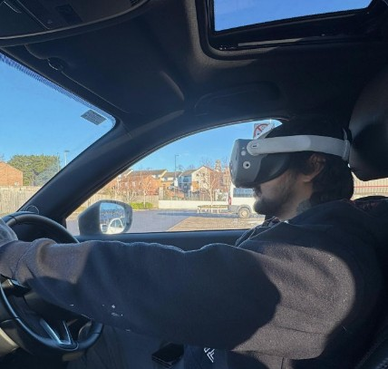
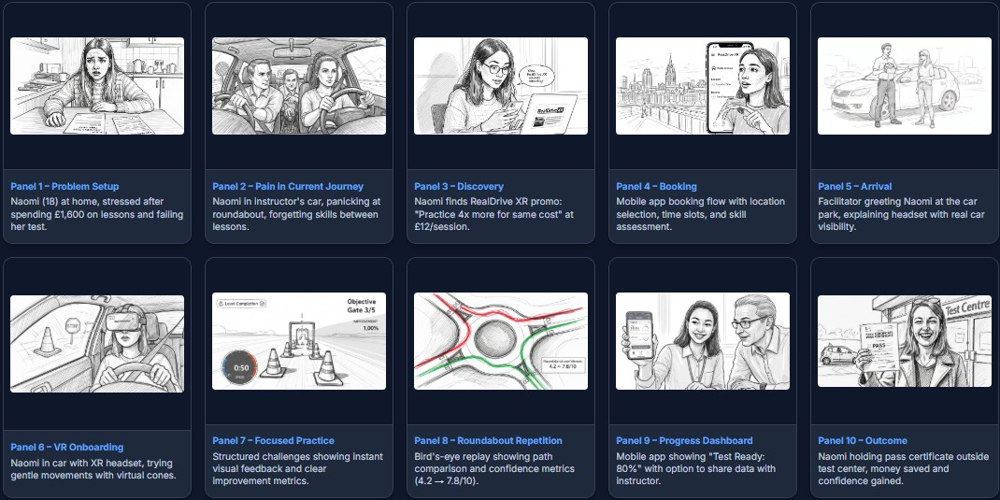
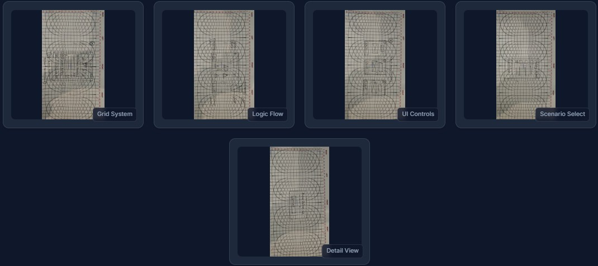
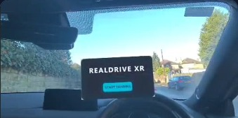
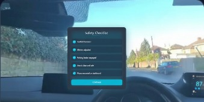
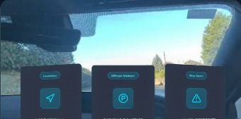
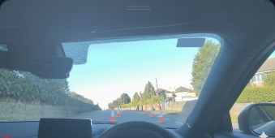
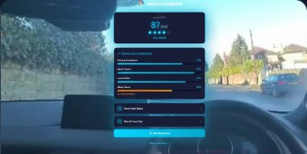
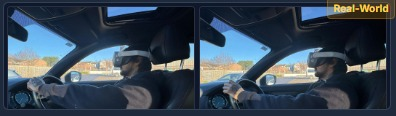

Nervous Naomi
Failed first test25 lessons (£750) so far, failed her first test on a roundabout fault. Can afford two lessons a month and has no car to practise in.
"I just need to do roundabouts like 50 times until my hands remember what to do."
RealDrive XR · Mixed reality · Quest 3
UK learners can afford about one lesson a week, and roundabouts freeze them. RealDrive XR lets them repeat the hard parts in a real car, in a closed car park, with XR cones and gates. In the 8-week pilot (n=24), 68% passed first time.

1The problem
1.5 million people take a driving test in the UK every year, and only 47% pass first time. Learners need repetition, but lessons are expensive, so they practise once a week and forget in between.
Lessons cost £30 to £40 an hour, and money is the number one reason learners stop before they are test ready.
64% can't afford enough lessonsLearners need 45+ hours but usually afford one lesson a week. The gap between sessions causes real forgetting.
They need 4× more repetitionComplex roads like roundabouts cause extreme stress. Fear leads to hesitation, dangerous mistakes and test failure.
92% fear multi-lane roundabouts2Research
I wanted to understand the emotional and practical barriers, find where UK instruction breaks down, test how ready people are for XR learning, and learn what makes parents trust and fund it.
4 learners (17 to 19), 2 nervous adults, 3 DVSA-approved instructors, 2 parents, 1 road safety officer.
Shadowed real lessons to watch emotional states, critical incidents and how instructors talk.
Through driving schools in London, Manchester and Birmingham, plus online learner communities.
UK driving statistics for 2023 to 24, and existing simulators, apps and VR options.
"I know the theory of roundabouts perfectly, but when I approach one my mind just goes blank. There's too much to think about at once."
Sarah, 18, London · interview
3Key insights
It comes from doing everything at once (observation, speed, gear, steering) without enough repetition.
Isolated, repeatable scenarios in a safe space.
"My dad tries to help but we just end up arguing." Tom, 17, Leeds
An affordable practice layer between lessons.
Instructor interruptions during a manoeuvre often spike anxiety rather than help learning.
Replay and analytics after the drive, not during it.
Willingness to try VR training drops with age.
Launch for 17 to 24, with onboarding that handles motion sickness.
The single biggest stressor for UK learners.
UK-authentic assets: driving on the left, real UK signage.
4Personas
Archetypes built from the 12 interviews and 152 survey responses.
25 lessons (£750) so far, failed her first test on a roundabout fault. Can afford two lessons a month and has no car to practise in.
"I just need to do roundabouts like 50 times until my hands remember what to do."
Held a licence 20 years ago and is starting again. Embarrassed learning alongside teenagers and wants evening sessions with clear progress.
"I feel silly being 42 and driving like a teenager. I want to make mistakes where no one can see me."
£2,000+ on 65 lessons, fourth test booked in six weeks, and a promotion that depends on the licence. Needs targeted repetition on her weak spots.
"I need to practise left-turn roundabouts 30 times straight until I stop hesitating."
500+ students taught. Frustrated by "learning decay" between weekly lessons, and wants better pass rates without adding car hours.
"Students come once a week and forget everything. I waste 30% of lesson time just refreshing last week."
5User journey
The typical UK learner's path today, and the same learner with RealDrive XR. Switch between them.
The fragmented, high-anxiety path of a typical UK learner.
3.0 / 10 experience6Problem statement
"UK learner drivers need a way to practise specific high-anxiety scenarios repeatedly in a safe environment, because traditional lessons are too expensive and infrequent to build muscle memory and confidence."
7Information architecture
The headset handles the drive. The Sensagram mobile app handles everything before and after it.
Referred by an instructor to practise specific weaknesses.
Account plus a 2-minute driving skill assessment.
Location, date and time in the app, plus a prep video.
On-site orientation, checks and the safety controls.
Headset fitting, passthrough intro, first low-speed movement.
Lane control, a slalom course and narrowing gates.
Video replay, performance metrics and AI coach tips.
A 3-session bundle (£30) instead of single sessions (£36).
8Design







Captured in the headset. These are real passthrough captures from the Quest 3 in the car, not renders.

Usability testing results, controlled car park in Nottingham.
A site plan of the Nottingham course, measured from the marker coordinates in my Google Earth file (KML), so every distance comes from real placements. Anything the file can't tell me, like what the P markers are for or how accurately they were placed, is marked [TBD], not invented.
1. Do not scale drawing. Units are metres.
4. North is up. Local flat projection, origin arbitrary.
2. Positions from KML marker coordinates.
5. [TBD] = not knowable from the file.
3. Every dimension is a code. See tables.
6. Grayscale only. CONFLICT = sources disagree.
Scroll the drawing sideways to see all of it.
9Pilot results
A controlled 8-week pilot in Nottingham. Before and after, against the national average or traditional lessons.
Pilot, n=24, 8 weeks, Nottingham. The 47% is the UK average, not a control group, so part of the gain may come from who signed up. Confidence, anxiety and readiness are self-reported scores out of 10. Roundabout anxiety fell 82% (self-reported), and learners ran 4× more practice scenarios for 1.8× the cost.
StatusPiloted for 8 weeks with 24 learners in Nottingham.
The pilot compared learners with the UK average. Next, I’d compare them with a matched group. These are plans, not results.
Learners from the same schools and instructors, with and without XR practice.
Shows whether repetition, not just motivation, drives the result.
Already tracked in the pilot: motion sickness fell from 17% to 6%.
| What could fail | What it costs | How the design handles it |
|---|---|---|
| A learner in a headset hits something in the car park | Injury, and the end of the service | A closed car park, a safety checklist before the car moves, an on-site briefing and low speeds. |
| Motion sickness | Learners stop coming back | Comfort mode and capped acceleration took it from 17% to 6%. |
| The gains come from motivated learners, not from XR | Instructors and partners back the wrong thing | Not ruled out yet. The matched-group comparison above is the test. |
10Key learnings
11What's next
UK pass rates and test volumes are DVSA statistics (secondary research). Interview, observation and survey figures come from my research (12 interviews, 6 observed lessons, 152 survey responses). Pilot figures come from the 8-week Nottingham pilot (n=24); confidence, anxiety and readiness are self-reported. The personas are archetypes. The site plan is measured from KML marker positions.